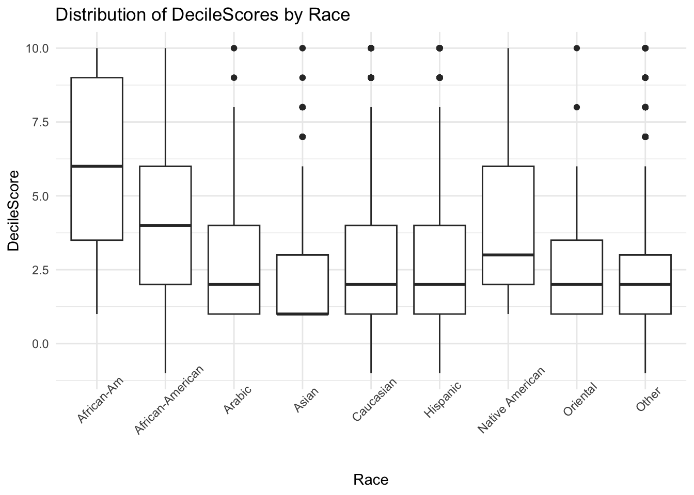
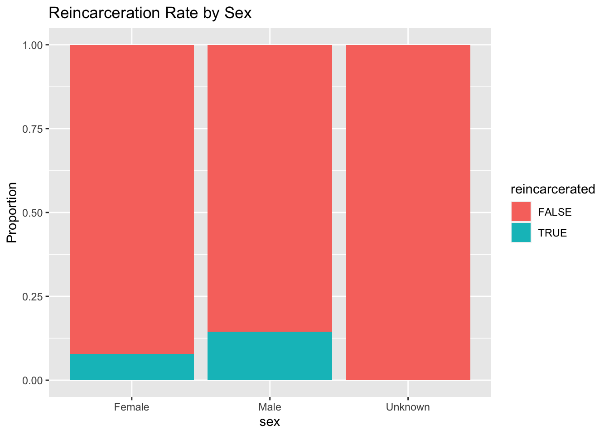
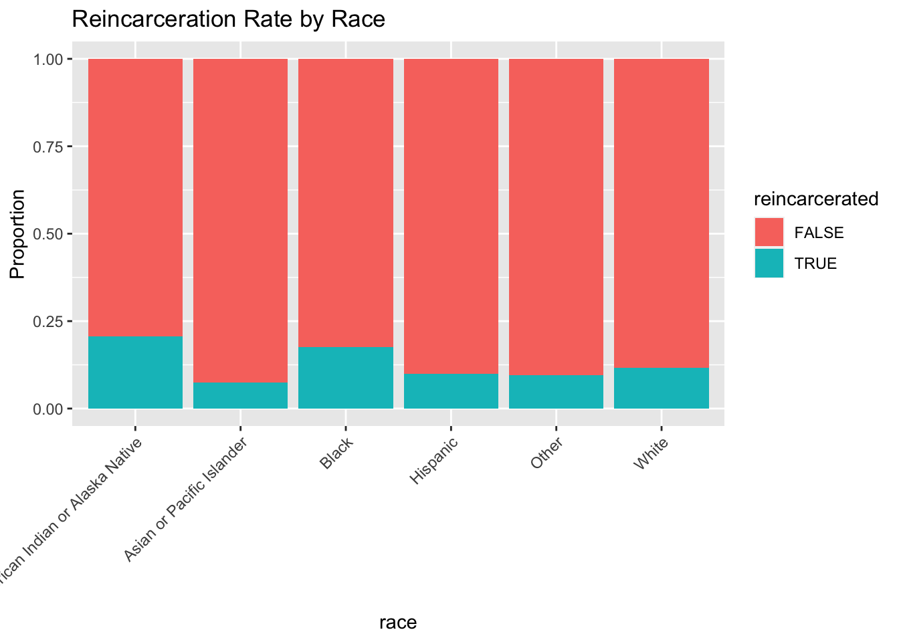
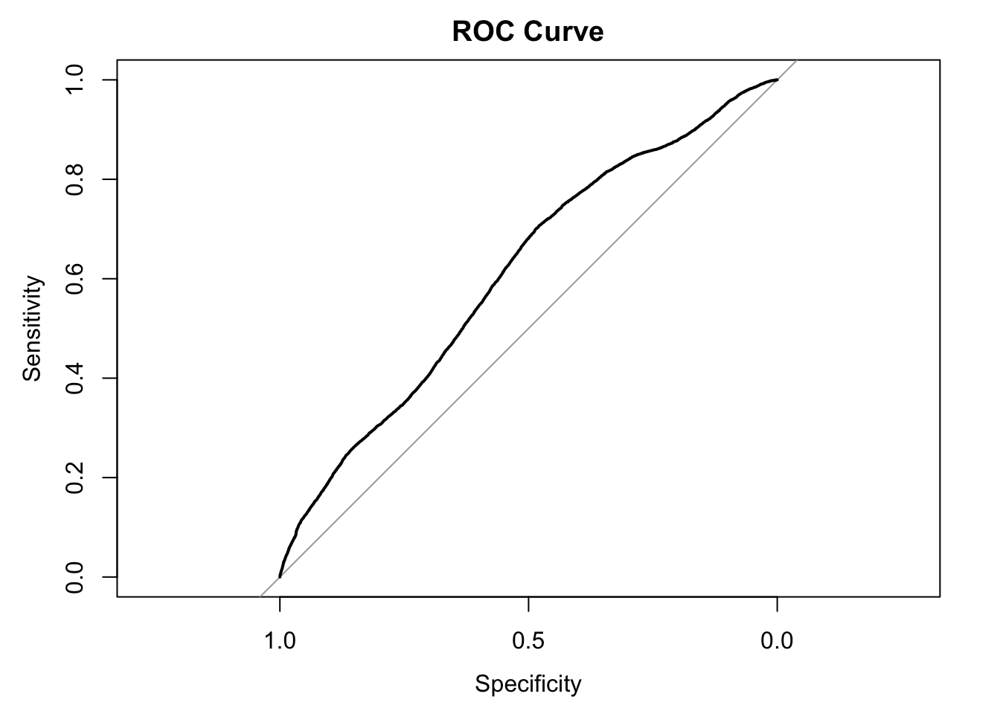
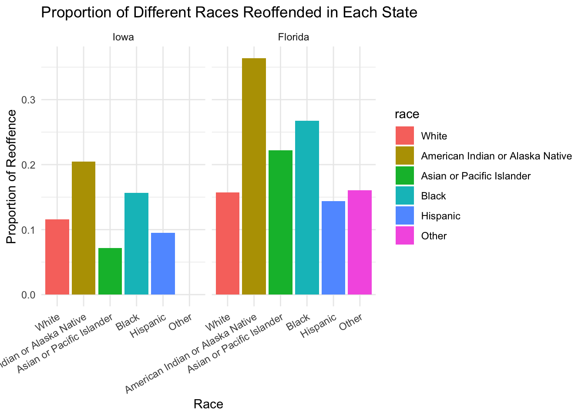

Analysis
Here we provide a detailed analysis using more sophisticated statistics techniques.
Disentangling the Factors of Recidivism: A Comprehensive Analysis of Race, Sex, Age, and COMPAS Algorithm’s Performance
Introduction
In the intricate landscape of criminal justice, the COMPAS (Correctional Offender Management Profiling for Alternative Sanctions) score stands as a pivotal metric. Judges and law enforcement officers rely on it to assess the likelihood of an individual reoffending—essentially predicting their propensity to commit future crimes. But behind this seemingly objective tool lies a web of complexities, biases, and ethical dilemmas.
The following data analysis endeavors to shed light on the relationship between the COMPAS score and several key factors: ethnic race, sex, and age. By delving into this trove of information, the analysis aims to unravel patterns, expose potential disparities, and contribute to a more informed discourse on recidivism.
The Motivation
Justice or Prejudice?
The COMPAS score, while ostensibly neutral, has faced scrutiny for potential racial and gender biases. Are certain demographics disproportionately labeled as high-risk offenders? This analysis seeks to answer this critical question.Ground Truth vs. Prediction:
The dataset from ProPublica not only includes the COMPAS score but also tracks whether individuals have actually reoffended. Comparing the ground truth outcomes with the predicted scores allows for an assessment of the model’s accuracy and the uncovering of any discrepancies.
Modeling and Inference
Justice or Prejudice?
One of the most pressing concerns surrounding the COMPAS score is the potential for bias against certain demographic groups, which could perpetuate systemic discrimination and exacerbate existing disparities within the criminal justice system. The analysis uncovered troubling evidence of such biases within the dataset.
The distribution of DecileScores, which represent normalized COMPAS scores ranging from 0 (lowest risk) to 10 (highest risk), across racial groups reveals stark disparities.
As this figure illustrates, African-Americans tend to have significantly higher median decile scores compared to other races like Caucasian or Asian. In addition, African-American is one of the only 2 minority group that does NOT have the highest score (10) as the outlier, with the other one being Native American.
This distribution raises grave concerns about the fairness and equity of the COMPAS algorithm. If individuals from particular racial backgrounds are systematically labeled as higher-risk offenders, it could lead to harsher sentencing decisions, increased rates of incarceration, and a perpetuation of the vicious cycle of marginalization and recidivism.
Further examination of the reincarceration rates by sex and race raises additional concerns about the fairness and accuracy of the COMPAS algorithm. The analysis revealed that the majority of individuals, regardless of their demographic characteristics, did not reoffend or become reincarcerated.


This finding calls into question the validity of assigning high-risk scores to a substantial portion of the population, as it may lead to undue consequences and perpetuate cycles of marginalization. Specifically, for only the violent cases in the Florida dataset, individuals labeled as “high” risk by the COMPAS algorithm (decile scores of 8-10) had a reoffense rate of only 46.69%. Meanwhile, those classified as “medium” risk (decile scores of 5-7) had a reoffense rate of 27.23%. These figures raise concerns about the high-risk threshold set by the COMPAS tool, as a 46.69% reoffense rate for the “high” risk group may not justify the potential consequences associated with such a label, particularly when considering the low overall reincarceration rates observed in our data.
The concerning disparities shown in the distribution of COMPAS scores naturally raise questions about the validity and accuracy of the algorithm’s risk predictions. While the disproportionately higher risk assignments for certain minority groups are undoubtedly problematic from a fairness perspective, an equally crucial inquiry is whether these scores align with actual recidivism outcomes. Do the COMPAS scores effectively capture the ground truth of an individual’s likelihood of reoffending, or are they plagued by systematic biases that perpetuate existing prejudices? To address this critical question, the analysis turns to a direct comparison between the COMPAS risk predictions and the observed reoffending rates across different racial groups.
Ground Truth vs. Prediction
To further assess the COMPAS algorithm’s performance and potential biases, a predictive model was developed using the combined data from both Florida and Iowa. The approach involved building a logistic regression model that predicted the binary outcome of reincarceration based on predictor variables such as sex, age, race, and state. The model was trained by setting the reference levels for categorical variables (sex, race, and state) to the categories with the most data points (Male, White, and Iowa, respectively).
The model’s performance was evaluated using the ROC (Receiver Operating Characteristic) curve, as shown in the image. The area under the curve (AUC) of 0.6106 indicates a moderate level of predictive performance, albeit with room for improvement.

To better understand the model’s predictions, the coefficients for each predictor variable were examined. According to the model, factors such as being American Indian or Alaska Native, Black, or from the state of Florida were associated with higher probabilities of reincarceration compared to the respective reference categories (White and Iowa).
| Characteristic | log(OR)1 | 95% CI1 | p-value |
|---|---|---|---|
| sex | <0.001 | ||
| Male | — | — | |
| Female | -0.70 | -0.75, -0.64 | |
| Unknown | -9.1 | ||
| age | -0.01 | -0.02, -0.01 | <0.001 |
| race | <0.001 | ||
| White | — | — | |
| American Indian or Alaska Native | 0.74 | 0.59, 0.90 | |
| Asian or Pacific Islander | -0.57 | -0.79, -0.37 | |
| Black | 0.31 | 0.25, 0.36 | |
| Hispanic | -0.34 | -0.43, -0.24 | |
| Other | -0.62 | -0.95, -0.32 | |
| state | <0.001 | ||
| Iowa | — | — | |
| Florida | 0.60 | 0.52, 0.67 | |
| 1 OR = Odds Ratio, CI = Confidence Interval | |||
It’s important to note that these findings contrast with the racial biases observed in the COMPAS scores. While the COMPAS scores exhibited a clear bias against African-Americans, the model and the ground truth data both suggested that American Indian or Alaska Native individuals had the highest likelihood of reoffending, followed by African-Americans. This highlights the divergent patterns of bias present in the COMPAS algorithm compared to the observed recidivism rates in the analysis.
Furthermore, examination of the proportion of different races that reoffended in each state revealed that Black individuals were not the most likely to reoffend in either Florida or Iowa.

These results underscore the importance of critically evaluating and calibrating risk assessment tools like COMPAS to ensure that they accurately reflect real-world patterns and do not perpetuate or amplify existing biases against certain racial or ethnic groups. The findings highlight the complex interplay of factors that influence recidivism rates and the potential for data-driven models to exhibit biases or inaccuracies if not carefully constructed and validated. While the model captures some underlying patterns, it is crucial to acknowledge that historical data on recidivism rates should not be blindly extrapolated to make sweeping generalizations about entire racial or ethnic groups. Just because certain groups may have higher observed reoffending rates in the past does not justify assigning elevated risk scores or harsher sentences to all individuals from those backgrounds. Such an approach would only perpetuate cycles of systemic discrimination and undermine the principles of equal justice under the law.
The analysis underscores the need for a more nuanced and individualized approach to risk assessment, one that accounts for the multitude of factors that influence an individual’s likelihood of reoffending. While data-driven models can provide valuable insights, they must be carefully calibrated, validated, and complemented with human judgment and a deep understanding of the underlying societal dynamics at play. Furthermore, ongoing efforts to address systemic biases, improve data quality, and explore alternative modeling approaches are crucial for developing more equitable and effective risk assessment tools.
Some Limitation at Our Current Analysis Progress
While the analysis provides valuable insights into the potential biases and performance of the COMPAS algorithm, it is important to acknowledge some limitations in the current analysis progress.
- Limited geographical scope: The data used in the analysis is limited to only two states, Florida and Iowa. Although these data consist of thousands of criminal records, which are valuable resources, they may not be representative of the entire United States. Including data from more states or regions could provide a more comprehensive understanding of potential biases and patterns across different jurisdictions and populations. However, such datasets are scarce to find online.
- Subset of data used for model building: The predictive model in the “Ground Truth vs. Prediction” section was built using a subset of the available data, specifically the combined data from Florida and Iowa. For the Florida dataset, only the violent cases from 2013-2015 is included because these were the only records that contained information on whether an individual had reoffended or not. While this subset allowed comparison of COMPAS predictions with the actual recidivism outcomes, it may not fully capture the complexities and nuances present in the broader dataset.
- Potential Confounding Factors: The analysis focused primarily on the relationships between COMPAS scores, recidivism rates, and demographic factors such as race, age, and sex. However, it is important to acknowledge that criminal behavior and recidivism are influenced by a complex interplay of various socioeconomic, environmental, and personal factors that may not be fully accounted for in our analysis. Factors such as education level, income, neighborhood characteristics, and access to rehabilitation programs could potentially confound or mediate the observed relationships.
- Limitations of the COMPAS Algorithm: While the analysis sheds light on potential biases within the COMPAS algorithm, it is crucial to recognize that the algorithm itself may have inherent limitations or flaws in its design or implementation. Risk assessment tools like COMPAS often rely on historical data, which may perpetuate existing biases or fail to capture nuanced societal dynamics. Additionally, the specific features and weightings used by the COMPAS algorithm are not fully transparent, making it challenging to pinpoint the root causes of observed biases.
Despite these limitations, the analysis serves as an important step towards critically evaluating the fairness and effectiveness of risk assessment tools like COMPAS. Acknowledging these limitations underscores the necessity for sustained research endeavors, comprehensive data collection initiatives, and continuous model refinement to develop risk assessment approaches that uphold the principles of equity, accuracy, justice, and equal treatment under the law.